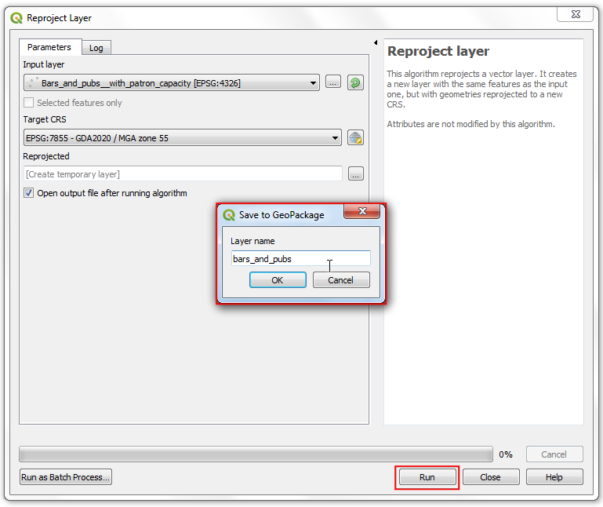

Ujaval Gandhi
Ujaval GandhiUtilizzare le interrogazioni spaziali (QGIS3)¶
Le interrogazioni spaziali (Spatial Queries) sono importanti per molte analisi. Queste consentono di selezionare, in un livello vettoriale, degli elementi usando relazioni spatiali (interseca, contiene, tocca etc.) con elementi in un secondo livello. In QGIS, questa funzione è disponibile usando gli strumenti Select by Location (seleziona per posizione) e Extract by Location (estrai per posizione) che trovate nel pannello Strumenti di Processing.
Descrizione del compito¶
Useremo 2 livelli, da dati dalla città di Melbourne, Australia. I livelli sono i pub nella città e le posizioni della stazioni della metro - vogliamo vedere tutti i pub che sono al massimo distanti 500 metri dalla stazione della metro.
Altre abilità che imparerai¶
Scegliere un appropriato sistema di proiezione e riproiettare un dato vettoriale.
Creare dei buffer
Lavorare con un formato geopackage (.gpkg)
Ottenere i dati necessari.¶
La piattaforma della città di Melbourne Open Data Platform .
Download the Metro Train Stations with Accessibility Information dataset by Metro Trains Melbourne. Export the data in the Original format.

Download the Bars and pubs, with patron capacity dataset by City of Melbourne’s Census of Land Use and Employment (CLUE). Export the data as a CSV.

Potete scaricare i dati direttamente dal link sotto:
metro_stations_accessbility.zip
Bars_and_pubs__with_patron_capacity
Fonte Dati: [CITYOFMELBOURNE]
Procedimento¶
Individuate il file appena scaricato
metro_stations_accessbility.zipusando il browser di QGIS e trascinatelo nel progetto. Verrà aggiunto un livellometro_stations_accessbilityal pannello Layers .

Aggiungi il livello con la posizione dei pub di Melbourne andando su . ( vedi doc:importing_spreadsheets_csv per ulteriori dettagli su come importare file di testo)

In the Data Source Manager | Delimited Text dialog, browse and select the downloaded
Bars_and_pubs__with_patron_capacity.csvfile as File name. The X field and Y field columns should be auto selected tox coordinateandy coordinaterespectively. Click Add.

Nota
QGIS saves the last-selected options for this dialog, so if you previously configured this dialog with other options, they may still be selected. Specifically, make sure the Record and Fields Options section has Number of header lines to discard option set to 0.
You will see a new
Bars_and_pubs__with_patron_capacitylayer added to the Layers panel. Both of the input layers are in the Geograhpic Coordinate Reference System (CRS)EPSG:4326 WGS84. For performing spatial analysis, it is recommended to use a Projected Coordinate Reference System (CRS). So we will now re-project both the layers to an appropriate regional CRS that minimizes distortions and allows us to work in units of distance such as meters instead of degrees. Go to .

Trovate e selezionate con doppio click il modulo (Riproietta vettore).

Selezionate
Bars_and_pubs__with_patron_capacitycome Input layer. Clicca il pulsante Select CRS vicino a Target CRS.

Per selezionare un SR/CRS appropriato, dobbiamo verificare se c’è un SR/CRS regionale per l’area. Per l’Australia, il Map Grid of Australia (MGA) 2020 è un sistema basato su UTM impostato su base regionale. Melbourne ricate nella zona UTM 55, quindi possiamo selezionare il SR/CRS GDA 2020 / MGA zone 55 EPSG:7855` CRS.

Nota
Se non si è sicuri quale SR/CRS utilizzare, scegliere il sistema UTM basato sul datum WGS84. Potete definire quale zona sia la migliore per l’area di studio usando il sito UTM Grid Zones of the World.
Cliccate il pulsante … vicino a Reprojected e selezionate
Save to GeoPackage. Geopackage il formato raccomandato, ed è il formato predefinito per scambiare dati QGIS3. NOTA IMPORTANTE: Un singolo file GeoPackage.gpkgpuò contenere più livelli vettoriali e raster

Nominate il file GeoPackage
spatialquerye salvate cliccando Save.

Alla richiesta del nome del livello, inserite
bars_and_pubse cliccate OK. Cliccare Run (Esegui) per eseguire la trasformazione di SR/CRS

La finestra aprirà il pannello Log e vedrete il procedimento creare il nuovo livello
bars_and_pubs.

Eseguiamo la stessa procedura per il livello
metro_stations_accessbility. Nella sezione Parameters della finesetra Reproject layer (Riproietta vettore). Selezionametro_stations_accessbilitycome Input layer (livello di ingresso). Lasciare lo stesso Target CRS. Clccare il pulsante … vicino a Reprojected e selezionaSave to GeoPackage(salva come Geopackage). Seleziona lo stesso nome del file di output precedente, i.e.spatialquery(ricorda che un singolo file GeoPackage può contenere più livelli, quindi salviamo questo livello nello stesso file geopackage). Inseriscimetro_stationscome Layer name (nome vettore). Clicca Run (Esegui).

Nella finestra di progetto di QGIS troverete 2 nuovi livelli caricati nel pannello Layers :
bars_and_pubsemetro_stations. Si possono nascondere i livelli originali, non servono più. Ora siamo pronti per eseguire l’interrogazione spaziale. Siamo interessati a selezionare i pub entro 500m dalle stazioni delle metro, il primo passo è quello di creare un buffer intorno alle stazioni metro, il buffer è un’area che rappresenta la mia area di ricerca. Cerca e trova il modulo (geometria vettore –> Buffer) nel pannello Processing Toolbox (Strumenti di processing).

In the Buffer dialog, select
metro_stationsas the Input layer. Set500meters as the Distance. Save the output to the samespatialquerygeopackage and entermetro_stations_buffersas the Layer name. Click Run.

vedrete un nuovo livello
metro_stations_bufferscaricato sul pannello Layers . Ora possiamo stabilire quali punti del livellobars_and_pubsricadonon all’interno del poligono del livellometro_stations_buffers. Trovate il modulo menuselection:Vector selection –> Extract by Location (estrai per posizione) dal pannello Processing Toolbox (Strumenti di processing) e fate doppio click per lanciarlo.

Nota
Extract by location (estrai per posizione) andrà a creare un nuovo livello con i punti che soddisfano i criteri dell’interrogazione spaziale. Se invece si vuole solo selezionare i punti che soddisfano i criteri, utilizzare lo strumento Select by location (seleziona per posizione).
Nella finestra Extract by location (estrai per posizione), selezionare
bars_and_pubsnello spazio Extract features from (estrai elementi da). SelezionaIntersect(interseca) come condizione geometry predicate (criterio geometrico). Impostametro_stations_bufferscome By comparing to the features from (rispetto agli elementi che). Salva il risultato nel file in formato GeoPackage``spatialquery`` come livello con nomeselected. Clicca Run.

Finita l’elaborazione, vedrete il livello
selectedaggiunto al pannello Layers. Nota che questo livelli contiene solamenti i punti del livellobars_and_pubsche sono inclusi nelle aree dei poligoni buffer.

La nostra analisi è completa. Noterete che i buffer non sono circolari ma ovali. Questo perchè il sistema di riferimento SR/CRS del progetto QGIS è nel SR/CRS EPSG:4326 WGS84. Per visualizzare i dati del progetto in un SR/CRS proiettato , andare nel menu () e selezionare
GDA 2020 / MGA zone 55 EPSG:7855ovvero quello utilizzato nella nostra analisi. Ora le aree buffer avranno la forma corretta (circolare).

If you want to give feedback or share your experience with this tutorial, please comment below. (requires GitHub account)